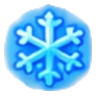
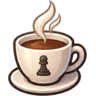
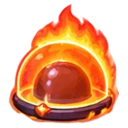

규칙: 체스와 같지만, 같은 기물을 계속 굴리면 뻗는다
-
내 차례에 수를 두면, 움직인 기물은 열이 오른다
1 → 2 →
3
-
같은 순간, 이번에 안 움직인 내 기물은 열이 1씩 식는다.
상대가 둘 때는 식지 않는다. 내 차례에만 정산된다
-
열이 4에 닿으면 과열
2. 그 기물은
내 차례 2번 동안 못 움직인다. 풀리면 열은 0부터 다시
-
킹은 달아오르지 않는다. 체크를 못 피하면 게임이 막히니까
-
움직일 기물이 하나도 없으면 그 턴은 그냥 넘어간다. 그때 체크를
받고 있으면
히트메이트로 패배
- 한 턴은 30초. 넘기면 시간패
-
일반 체스: 변형 규칙 없는 보통 체스. 열도 과열 잠금도
아이템도 없다
-

에어컨 체스: 시작할 때 내 기물 하나(킹 제외)를 몰래
에어컨으로 지정한다. 상대에겐 안 보인다. 그 기물이 잡히면
즉시 패배. 에어컨 모드는 히트 규칙을 쓰지 않는다. 열
표시도 과열 잠금도 없다
-
아이템 모드: 히트 규칙 그대로에 아이템이 더해진다.
시작할 때 각자 아이템 3종을 모두 받고, 자기 차례에 버튼으로
각각 1회씩 발동한다. 발동해도 턴은 소모하지 않는다
-
선풍기: 바람으로 내 과열 기물을 전부 해제한다
-

뜨거운 아메리카노: 상대 기물 하나에 쏟는다. 랜덤
대상이 2턴 잠김
-

이중열돔: 발동 후 10턴 동안
양쪽 모두 기물이 2턴 연속 움직이면 과열된다
(임계값 4→2). 10턴은 양쪽 합쳐 10수. 패스도 한 수로 센다
요령: 강한 기물 하나로 몰아붙이면 그 기물이 먼저 잠긴다. 여러 기물을
번갈아 쓰고, 상대의 핵심 기물이 뜨거워졌을 때 몰아치면 된다.